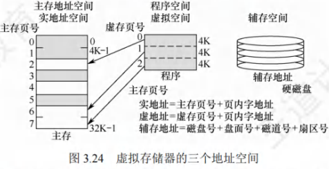
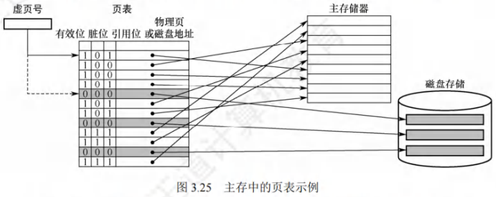
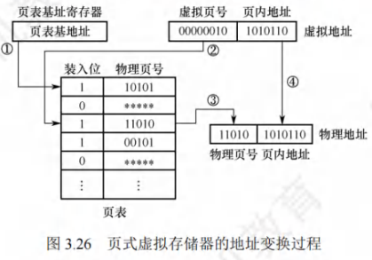
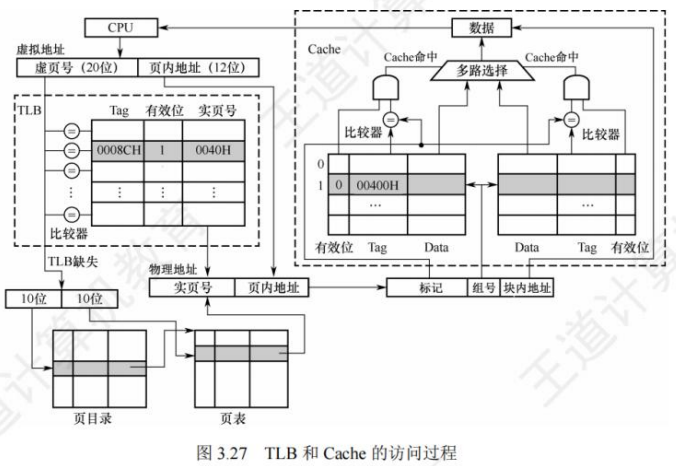
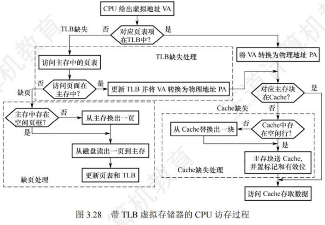
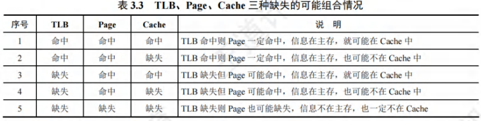
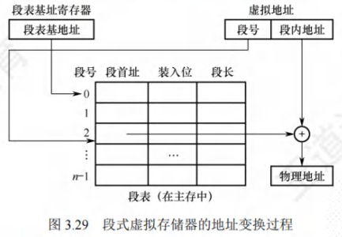

虚拟存储器
[toc]
主存和辅存共同构成了虚拟存储器，二者在硬件和系统软件的共同管理下工作。对于应用程序员而言，虚拟存储器是透明的。虚拟存储器具有接近主存的速度和辅存的容量。
虚拟存储器的基本概念
- 虚拟存储器将主存或辅存的地址空间统一编址，形成一个庞大的地址空间，在这个空间内，用户可以自由编程，而不必在乎实际的主存容量和程序在主存中实际的存放位置。
- 用户编程允许涉及的地址称为虚地址或逻辑地址，虚地址对应的存储空间称为虚拟空间或程序空间。
- 实际的主存单元地址称为实地址或物理地址，实地址对应的是主存地址空间，也称实地址空间。
- 虚地址比实地址要大很多。虚拟存储器的地址空间如图3.24所示。

-
CPU使用虚地址时，先判断这个虚地址对应的内容是否已装入主存。
- 若已在主存中，则通过地址变换，CPU可直接访问主存指示的实际单元；
- 若不在主存中，则把包含这个字的一页或一段调入主存后再由CPU访问。
- 若主存已满，则采用替换算法置换主存中的交换块（页面）。
-
虚拟存储器也采用和Cache类似的技术，将辅存中经常访问的数据副本存放到主存中。
- 但是缺页（或段）而访问辅存的代价很大，提高命中率是关键，因此虚拟存储机制采用全相联映射，每个虚页面可以存放到对应主存区域的任何一个空闲页位置。
- 此外，当进行写操作时，不能每次写操作都同时写回磁盘，因而，在处理一致性问题时，采用回写法。
页式虚拟存储器
页式虚拟存储器以页为基本单位。主存空间和虚拟地址空间都被划分成相同大小的页，主存空间中的页称为物理页、实页、页框，虚拟地址空间中的页称为虚拟页、虚页。页表记录了程序的虚页调入主存时被安排在主存中的位置。页表一般长久地保存在内存中。
页表
图3.25是一个页表示例。有效位也称装入位，用来表示对应页面是否在主存，若为1，则表示该虚拟页已从外存调入主存，此时页表项存放该页的物理页号；若为0，则表示没有调入主存，此时页表项可以存放该页的磁盘地址。脏位也称修改位，用来表示页面是否被修改过，虚存机制中采用回写策略，利用脏位可判断替换时是否需要写回磁盘。引用位也称使用位，用来配合替换策略进行设置，例如是否实现最先调入（FIFO位）或最近最少用（LRU位）策略等。

以图3.25的页表为例，假设CPU欲访问的数据在第1页，对应的有效位为1，说明该页已存放在主存中，再通过地址转换部件将虚拟地址转换为物理地址，然后到相应的主存实页中存取数据。若该数据在第5页，有效位为0，则发生“缺页”异常，需调用操作系统的缺页异常处理程序。缺页处理程序根据对应表项中的存放位置字段，将所缺页面从磁盘调入一个空闲的物理页框。若主存中没有空闲页框，还需要选择一个页面替换。由于采用回写策略，因此换出页面时根据脏位确定是否要写回磁盘。缺页处理过程中需要对页表进行相应的更新。
页式虚拟存储器的优点是，页面的长度固定，页表简单，调入方便。缺点是，因为程序不可能正好是页面的整数倍，最后一页的零头将无法利用而造成浪费，并且页不是逻辑上独立的实体，所以处理、保护和共享都不及段式虚拟存储器方便。
地址转换
在虚拟存储系统中，指令给出的地址是虚拟地址，因此当CPU执行指令时，要先将虚拟地址转换为主存物理地址，才能到主存中存取指令和数据。虚拟地址分为两个字段：高位为虚页号，低位为页内偏移地址。物理地址也分为两个字段：高位为物理页号，低位为页内偏移地址。由于两者的页面大小相同，因此页内偏移地址是相等的。虚拟地址到物理地址的转换是由页表实现的，页表是一张存放在主存中的虚页号和实页号的对照表。
每个进程都有一个页表基址寄存器，存放该进程的页表首地址，据此找到对应的页表首地址(对应1)，然后根据虚拟地址高位的虚拟页号找到对应的页表项(对应2)，若装入位为1，则取出物理页号(对应3)，和虚拟地址低位的页内地址拼接，形成实际物理地址(对应4)。若装入位为0，说明缺页，需要操作系统进行缺页处理。地址变换过程如图3.26所示。

快表(TLB)
由地址转换过程可知，访存时先访问一次主存去查页表，再访问主存才能取得数据。若缺页，则还要进行页面替换、页面修改等，因此采用虚拟存储机制后，访问主存的次数更多了。
依据程序访问的局部性原理，在一段时间内总是经常访问某些页时，若把这些页对应的页表项存放在高速缓冲器组成的快表(TLB)中，则可以明显提高效率。相应地把放在主存中的页表称为慢表(Page)。在地址转换时，首先查找快表，若命中，则无须访问主存中的页表。
快表用SRAM实现，其工作原理类似于Cache，通常采用全相联或组相联映射方式。TLB表项由页表表项内容和TLB标记组成。全相联映射下，TLB标记就是对应页表项的虚拟页号；组相联方式下，TLB标记则是对应虚拟页号的高位部分，而虚拟页号的低位部分作为TLB组的组号。
具有TLB和Cache的多级存储系统
图3.27是一个具有TLB和Cache的多级存储系统，其中Cache采用二路组相联方式。CPU给出一个32位的虚拟地址，TLB采用全相联方式，每一项都有一个比较器，查找时将虚页号与每个TLB标记字段同时进行比较，若有某一项相等且对应有效位为1，则TLB命中，此时可直接通过TLB进行地址转换；若未命中，则TLB缺失，需要向主存去查页表。图中所示的是两级页表方式，虚页号被分成页目录索引和页表索引两部分，由这两部分得到对应的页表项，从而进行地址转换，并将相应表项调入TLB，若TLB已满，则还需要采用替换策略。完成由虚拟地址到物理地址的转换后，Cache机构根据映射方式将物理地址划分成多个字段，然后根据映射规则找到对应的Cache行或组，将对应Cache行中的标记与物理地址中的高位部分进行比较，若相等且对应有效位为1，则Cache命中，此时根据块内地址取出对应的字送给CPU。

查找时，快表和慢表也可以同步进行，若快表中有此虚页号，则能很快地找到对应的实页号，并且使慢表的查找作废，从而就能做到虽采用虚拟存储器但访问主存速度几乎没有下降。
在一个具有TLB和Cache的多级存储系统中，CPU一次访存操作可能涉及TLB、页表、Cache、主存和磁盘的访问，访问过程如图3.28所示。可见，CPU访存过程中存在三种缺失情况：
- TLB缺失：要访问的页面的页表项不在TLB中；
- Cache缺失：要访问的主存块不在Cache中；
- Page缺失：要访问的页面不在主存中。
由于TLB只是页表的一部分副本，因此Page缺失时，TLB也必然缺失。同理，Cache也只是主存的一部分副本，页表未命中意味着信息不在主存，因此Page缺失时，Cache也必然缺失。这三种缺失的可能组合情况如表3.3所示。


最好的情况是第1种组合，此时无须访问主存；第2种和第3种组合都需要访问一次主存；第4种组合需要访问两次主存；第5种组合发生“缺页异常”，需要访问磁盘，并且至少访问两次主存。Cache缺失处理由硬件完成；缺页处理由软件完成，操作系统通过“缺页异常处理程序”来实现；而TLB缺失既可以用硬件，又可以用软件来处理。
段式虚拟存储器
段式虚拟存储器中的段是按程序的逻辑结构划分的，各个段的长度因程序而异。把虚拟地址分为两部分：段号和段内地址。虚拟地址到实地址之间的变换是由段表来实现的。段表是程序的逻辑段和在主存中存放位置的对照表。段表的每行记录与某个段对应的段号、装入位、段起点和段长等信息。因为段的长度可变，所以段表中要给出各段的起始地址与段的长度。
CPU根据虚拟地址访存时，首先根据段表基地址与段号拼接成对应的段表项，然后根据该段表项的装入位判断该段是否已调入主存（装入位为“1”，表示该段已调入主存；装入位为“0”，表示该段不在主存中）。已调入主存时，从段表读出该段在主存中的起始地址，与段内地址（偏移量）相加，得到对应的主存实地址。段式虚拟存储器的地址变换过程如图3.29所示。

因为段本身是程序的逻辑结构所决定的一些独立部分，因而分段对程序员来说是不透明的；而分页对程序员来说是透明的，程序员编写程序时不需知道程序将如何分页。
段式虚拟存储器的优点是，段的分界与程序的自然分界相对应，因而具有逻辑独立性，使得它易于编译、管理、修改和保护，也便于多道程序的共享；缺点是因为段长度可变，分配空间不便，容易在段间留下碎片，不好利用，造成浪费。
段页式虚拟存储器
在段页式虚拟存储器中，把程序按逻辑结构分段，每段再划分为固定大小的页，主存空间也划分为大小相等的页，程序对主存的调入、调出仍以页为基本交换单位。每个程序对应一个段表，每段对应一个页表，段的长度必须是页长的整数倍，段的起点必须是某一页的起点。
虚地址分为段号、段内页号、页内地址三部分。CPU根据虚地址访存时，首先根据段号得到段表地址；然后从段表中取出该段的页表起始地址，与虚地址段内页号合成，得到页表地址；最后从页表中取出实页号，与页内地址拼接形成主存实地址。
段页式虚拟存储器的优点是，兼具页式和段式虚拟存储器的优点，可以按段实现共享和保护；缺点是在地址变换过程中需要两次查表，系统开销较大。
虚拟存储器与Cache的比较
虚拟存储器与Cache既有很多相同之处，又有很多不同之处。
- 相同之处
- 最终目标都是为了提高系统性能，两者都有容量、速度、价格的梯度。
- 都把数据划分为小信息块，并作为基本的交换单位，虚存系统的信息块更大。
- 都有地址映射、替换算法、更新策略等问题。
- 都依据局部性原理应用“快速缓存”的思想，将活跃的数据放在相对高速的部件中。
- 不同之处
- Cache主要解决系统速度，而虚拟存储器却是为了解决主存容量。
- Cache全由硬件实现，是硬件存储器，对所有程序员透明；而虚拟存储器由OS和硬件共同实现，是逻辑上的存储器，对系统程序员不透明，但对应用程序员透明。
- 对于不命中性能影响，因为CPU的速度约为Cache的10倍，主存的速度为硬盘的100倍以上，因此虚拟存储器系统不命中时对系统性能影响更大。
- CPU与Cache和主存都建立了直接访问的通路，而辅存与CPU没有直接通路。也就是说，在Cache不命中时主存能和CPU直接通信，同时将数据调入Cache；而虚拟存储器系统不命中时，只能先由硬盘调入主存，而不能直接和CPU通信。